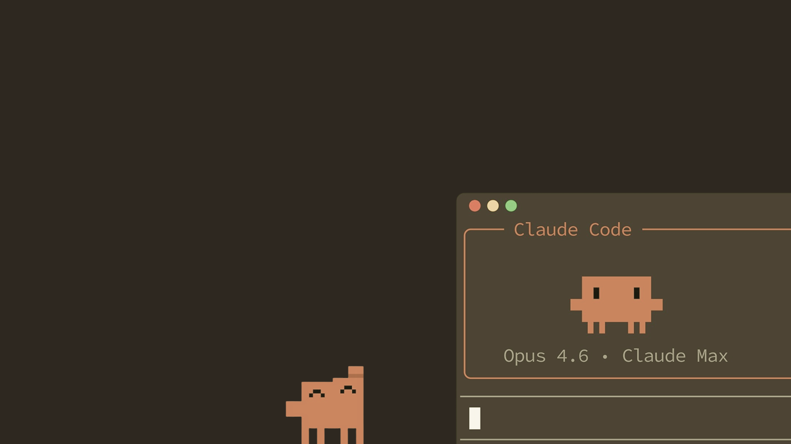
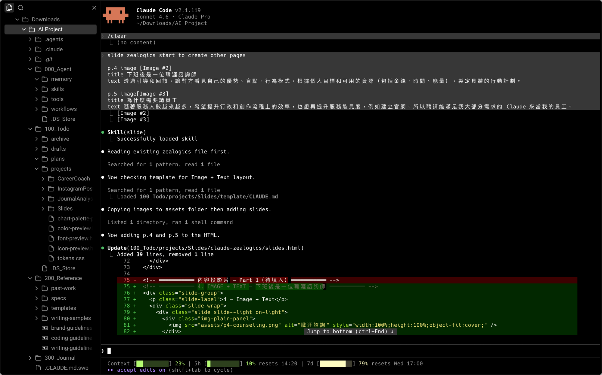

1 — Cover

我怎麼調教 Claude 讓他好好聽話
2 — Agenda
3 — Section Divider · Part 1
4 — Image + Text
透過引導和回饋，讓對方看見自己的優勢、盲點、行為模式。
根據個人目標和可用的資源（包括金錢、時間、能量），製定具體的行動計劃。
5 — Image + Text, Browser
隨著服務人數越來越多，希望提升行政和創作流程（寫文章、做簡報）的效率。
也想再提升服務能見度，例如建立官網。所以聘請能滿足我大部分需求的 Claude 來當我的員工。

6 — Image + Text
雖然程式開發能力絕對比不上各位大大，但有學過基礎的 HTML/CSS，還是對使用 Claude Code 有一些幫助。
例如：我可以直接開啟 VS Code 修改 CSS 的細節，多少節省了一些 token。
7 — Pie Chart
原則：AI 跟人類的強項？如何協作才更順暢？
工具：Claude Code 的應用概念和技巧
哲學：AI 時代下，人類的獨特性和價值？